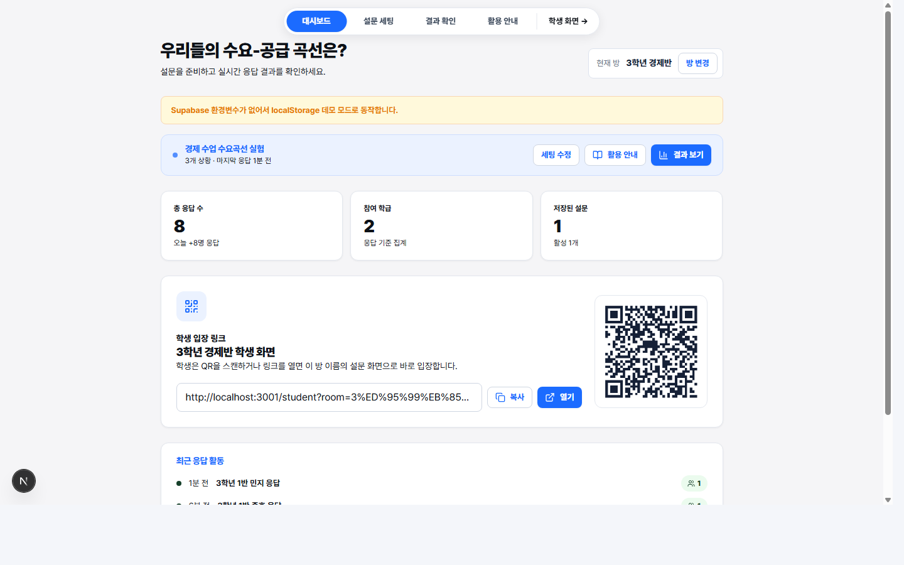
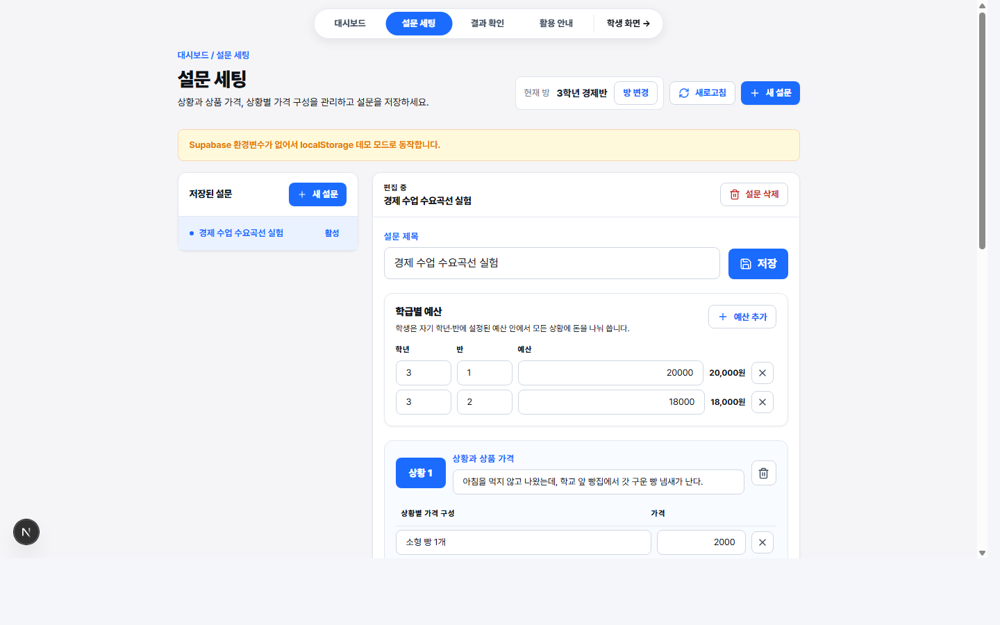
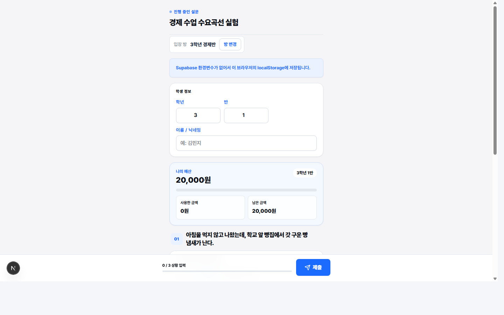
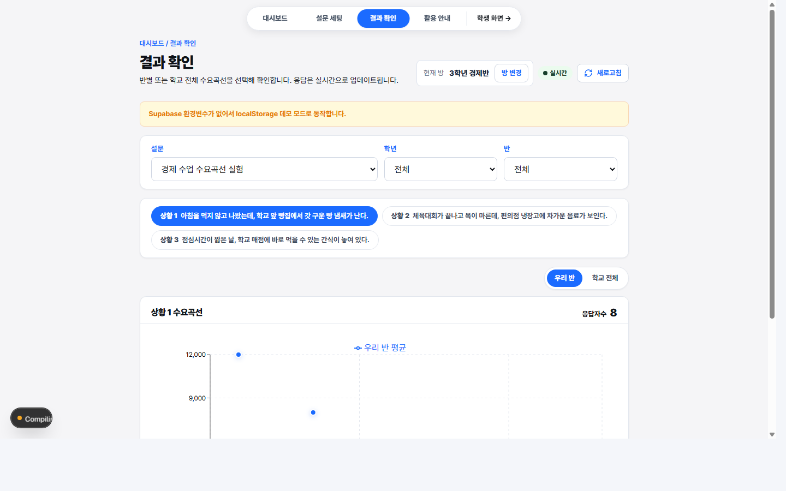

추상 개념을 생활 장면으로 전환
빵, 음료, 간식처럼 학생이 바로 상상할 수 있는 상황에서 가격과 구매량의 관계를 관찰합니다.
경제 수업용 실시간 수요곡선 활동
이 도구는 가격이 달라질 때 학생들이 실제로 얼마나 구매할지 응답하게 하고, 그 결과를 즉시 수요곡선으로 시각화합니다.

왜 필요한가
빵, 음료, 간식처럼 학생이 바로 상상할 수 있는 상황에서 가격과 구매량의 관계를 관찰합니다.
한 명의 직감이 모이면 반 평균과 전체 평균이 되고, 시장 수요의 의미가 눈에 보입니다.
가격이 올라도 수요가 줄지 않는 지점, 반별 차이, 예외 응답을 바로 질문으로 바꿀 수 있습니다.
수업 진행 흐름
가격 설명, 학급별 예산, 조사 상황을 수업 목표에 맞게 바꿉니다.
각자 배정된 가격 조건에 대해 몇 개를 살지 선택합니다.
응답자 수, 평균 구매량, 반별 필터를 활용해 즉시 분석합니다.

실제 수업 화면


교육적 효과
가격과 구매량의 반대 방향 움직임을 학생 데이터에서 직접 발견합니다.
손을 드는 몇 명이 아니라 전체 학생의 선택이 수업 자료가 됩니다.
평균, 분포, 반별 차이를 근거로 경제 현상을 설명하게 됩니다.
대체재, 예산 제약, 선호 차이 같은 확장 질문으로 자연스럽게 이어집니다.
수업 대화 예시
학생들은 그래프 모양을 읽고, 상황의 맥락·가격 인식·예산 제약을 근거로 설명합니다. 이때 경제 개념은 정답 암기가 아니라 해석의 언어가 됩니다.
교사에게 어필할 포인트
상품·가격 구간만 바꾸면 다른 학급, 다른 단원, 수행평가 도입 활동에도 재사용할 수 있습니다.
응답 수와 그래프를 보며 학생들이 가격-수량 관계를 어떻게 이해하는지 즉시 확인합니다.
교과서 예시보다 “우리 반 데이터”가 토론 참여의 심리적 거리를 훨씬 낮춥니다.
추천 소개 문장: 경제 수요곡선을 학생들이 직접 만든 데이터로 관찰하고, 그 자리에서 그래프 해석과 시장 원리 토론까지 이어 주는 교실형 실험 도구입니다.
45분 운영안
오늘 조사할 상품과 가격 조건을 설명하고, “가격이 바뀌면 나는 얼마나 살까?”를 던집니다.
QR로 접속해 학년·반·이름을 입력하고 각 상황별 구매량을 제출합니다.
반 평균과 전체 평균을 비교하며 수요 법칙, 예외 지점, 가격 민감도를 묻습니다.
수요, 수요량, 수요곡선, 예산 제약을 정리하고 대체재·보완재 질문으로 확장합니다.
마무리 메시지
그래서 경제 개념은 칠판 위 정의에 머물지 않고, 우리 반의 선택과 그래프, 그리고 학생들의 설명 속에서 살아 움직입니다.